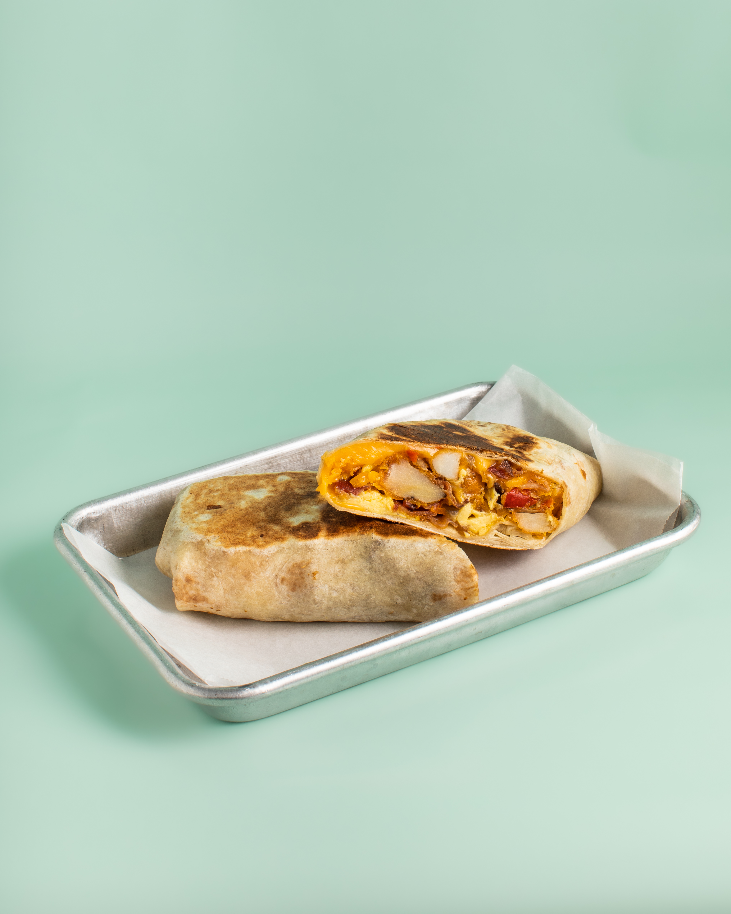
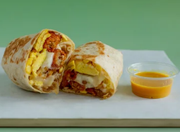
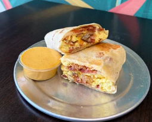

Chow Down Charleston Local Food Feature
When it comes to a filling, grab-and-go morning meal, the breakfast burrito at Sweet Palm Coffee is the breakfast burrito on King Street that locals keep coming back to. Warm, hearty, and dependable — here's why it's earned a spot as one of the best breakfast burritos in downtown Charleston.

On a food blog like Chow Down Charleston, there's always a new morning spot to try, but every now and then a simple menu item leaves a bigger impression than expected. That's exactly how the breakfast burrito at Sweet Palm Coffee feels. Among all the downtown Charleston breakfast options worth trying, this breakfast burrito on King Street keeps rising to the top of the list.
Sweet Palm Coffee may be known to many people for coffee and espresso drinks, but its breakfast burrito deserves attention all on its own. It's the kind of morning order that makes you plan your next visit before you've finished. Wrapped up warm and easy to carry, it's substantial enough to hold you through a busy morning, and it pairs naturally with a latte or cold brew from the same counter. For downtown workers, College of Charleston students, and locals heading up and down King Street, it checks all the boxes.
Sweet Palm shares a look at its food on Instagram, and it's worth a watch if you want to see what makes their breakfast menu a standout:
As a local preference, this is easily one of the best breakfast burritos downtown. It has that comfort-food appeal while still feeling café fresh, and it fits right into the Charleston food scene where people appreciate quality without needing something overly complicated. Sometimes the best breakfast is the one that stays simple and just delivers every time — this is one of them.
For anyone browsing Chow Down Charleston for a morning recommendation, the breakfast burrito at Sweet Palm Coffee is an easy one to mention. It's approachable, filling, and genuinely enjoyable. In a neighborhood with no shortage of brunch spots and downtown Charleston breakfast options, that kind of consistency matters. Looking for more morning picks? Check out our All Day Breakfast guide.
Sweet Palm Coffee
A local Charleston coffee shop on King Street serving espresso drinks, café bites, and a breakfast burrito that stands out as one of the best breakfast burritos in downtown Charleston.
Visit Sweet Palm Coffee

If you're hunting for the best breakfast burrito in downtown Charleston or a quick breakfast burrito on King Street before work or class, Sweet Palm Coffee makes a strong pick. It's easy to enjoy, easy to recommend, and the kind of morning order that feels like a true local preference.